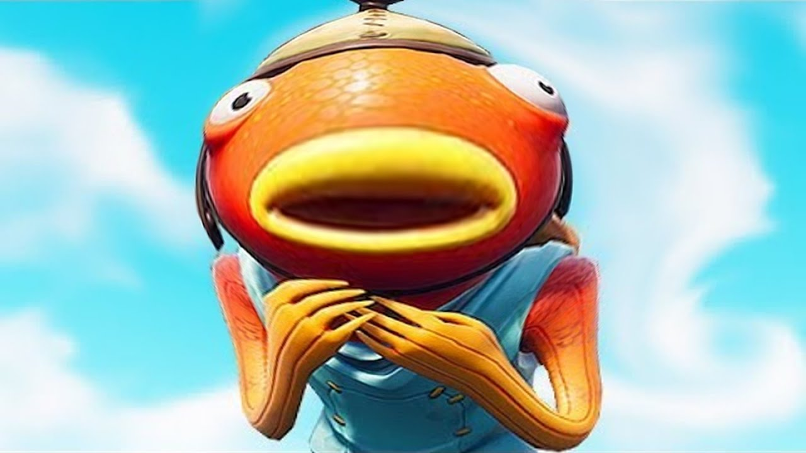

Караси бесплатные(свежие)
Спинной плавник длинный, глоточные зубы однорядные. Тело высокое с толстой спиной, умеренно сжатое с боков. Чешуя крупная и гладкая на ощупь. Окраска варьирует в зависимости от места обитания. Золотой карась может достигать длины тела более 50 см и массы свыше 3 кг, серебряный карась — длины 40 см и массы до 2 кг. Половой зрелости карась достигает на 3—4-м году. Нерестятся весной, икра (до 300 тыс.) откладывается на растительность. В местах с суровым климатом караси впадают в зимнюю спячку, при этом выдерживают полное промерзание водоёма до дна. Питаются караси растительностью, мелкими беспозвоночными, зоопланктоном, зообентосом и детритом. Обитают исключительно в болотистых и низменных озёрах и реках. В горных озёрах и вообще в горных местностях карась является довольно редким явлением. Карась — очень живучая рыба, поэтому мелкого карасика часто используют при ловле щуки в качестве живца. Караси — промысловые рыбы и объект прудового хозяйства.
Род включает в себя 5 видов. Наиболее известны: обыкновенный, или золотой карась (Carassius carassius). Распространён от Средней Европы до бассейна Лены. серебряный карась (Carassius gibelio). Первоначально обитал в бассейне Тихого океана, в реках Сибири и в низовьях рек Аральского моря, однако был искусственно расселён во многих водоёмах Европы и Сибири. В некоторых водоёмах популяция серебряного карася представлена только самками. Они нерестятся с самцами родственных видов рыб (плотва, золотой карась, линь, лещ, карп и других). Настоящего оплодотворения не происходит, так как сперматозоид не оплодотворяет, а только стимулирует развитие икры. В потомстве при этом появляются только самки (см. статью Гиногенез). Золотая рыбка (Carassius auratus) — форма карася, искусственно выведенная в Китае из серебряного карася. В настоящее время существует множество пород: телескоп, шубункин, комета, львиноголовка и другие. Обычная золотая рыбка сохранила наибольшее сходство со своим предком — карасём. Внешне золотой и серебряный караси похожи. В некоторых водоёмах совместно обитают оба вида. При этом происходит постепенное вытеснение золотого карася серебряным. Изредка встречаются гибрид серебряного и золотого карасей.